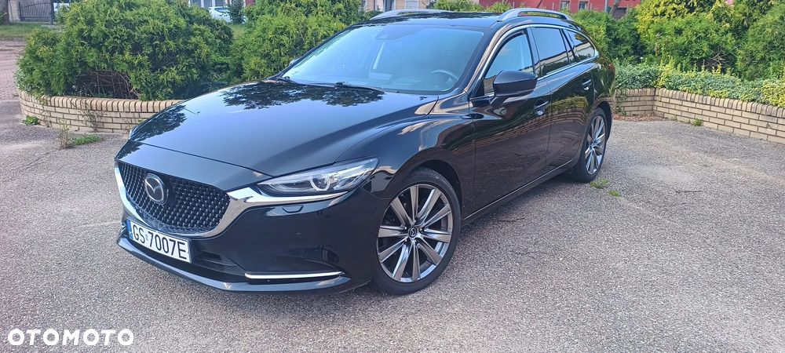

Rok produkcji: 2019
2,5 benzyna 194KM
nr rej.: GS7007E
data I rej.: 08.05.2019
aktualny przebieg: 109000
Serwisowany corocznie w Mazda Goworowski.
Polisa OC do 22/05/2026
Badanie techniczne do 23/05/2027
Założony hak z adnotacją w dowodzie rejestracyjnym.
Auto miało dwa miesiące temu wymianę dynamiczną oleju w skrzyni biegów oraz wymianę akumulatora w serwisie.
